最新 — 2026 Spring
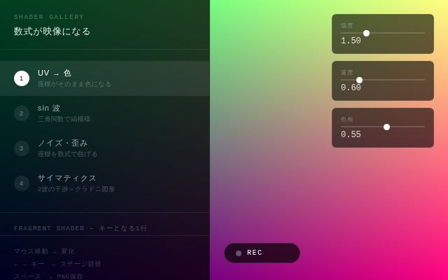
shader_gallery
GLSL
数式が映像になる4ステージのシェーダーギャラリー。マウス操作・PNG/動画保存対応。
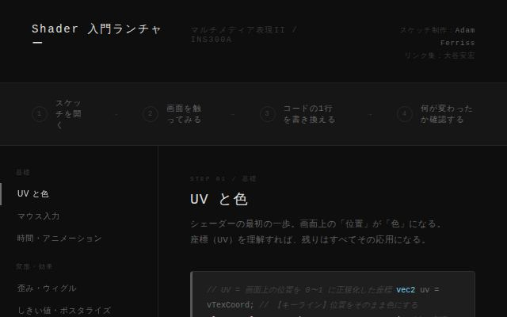
shader_launcher
p5.js
Adam Ferrissのシェーダースケッチへのリンク集。UV・マウス・ノイズ・フィードバックなど8カテゴリ。
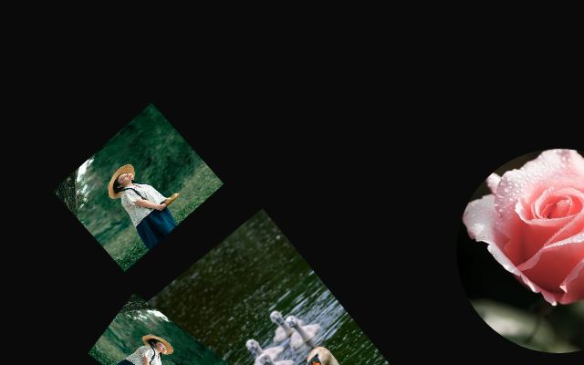
auto_collage
p5.js
マスク切り抜き・コピー・ランダム配置・パターン・描画モード・スリットスキャンの6モードコラージュツール。
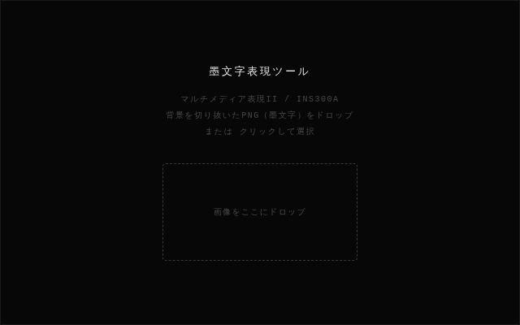
sumi_tool
WebGL
墨文字PNGをドロップして5モードで表現。パーティクル・シェーダー重ね・雨・マスク・筆書きアニメーション。
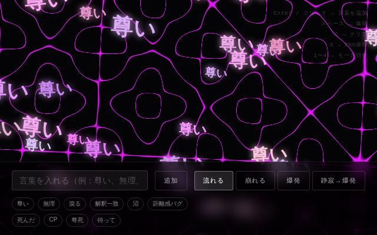
text_tool
WebGL
言葉を入力して画面に流す・崩す・爆発させる。4モードのテキスト表現ツール。ピンク〜紫系シェーダー背景。
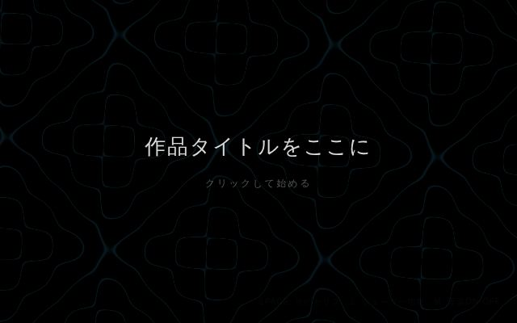
generative_world
WebGL
シェーダー背景＋キャラクター＋音楽＋VOICEVOX音声＋セリフテキストを統合した総合表現テンプレート。
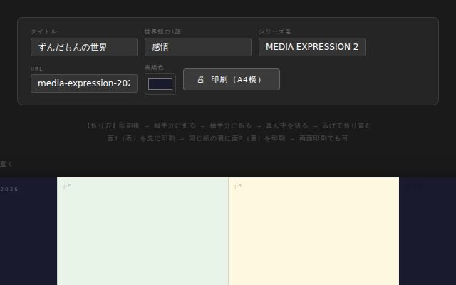
zine_template
Print
A4×1枚・8ページ折りzineテンプレート。スクリーンショットをドロップして印刷するだけ。
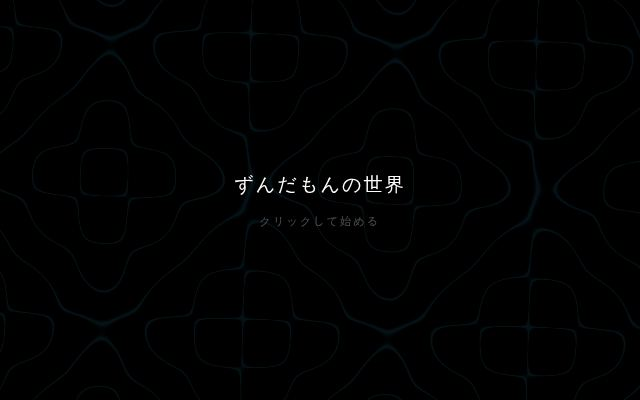
zundamon_world
WebGL
感情タグで映像・シェーダー・三体・テキスト・キャラが変化。VOICEVOXと連動する総合表現テンプレート。
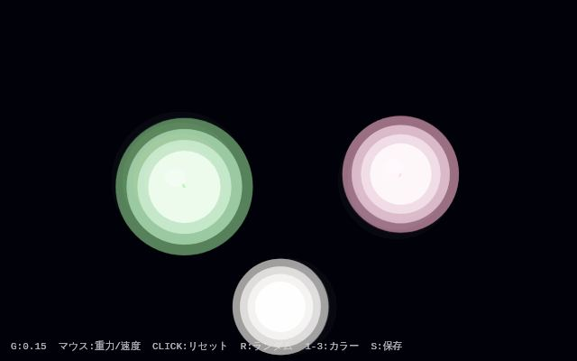
three_body_mochi
p5.js
三体問題の軌道計算＋お餅のような融合表現。マウスで重力と速度を変化させる。
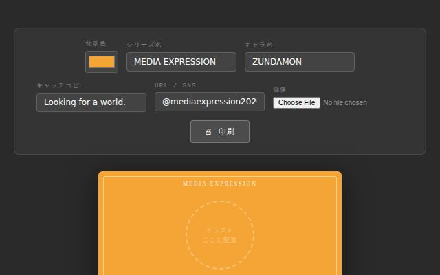
package_design
Print
A6パッケージデザインテンプレート。背景色・キャラ名・コピーをリアルタイム編集して印刷。
映像・ストリーム
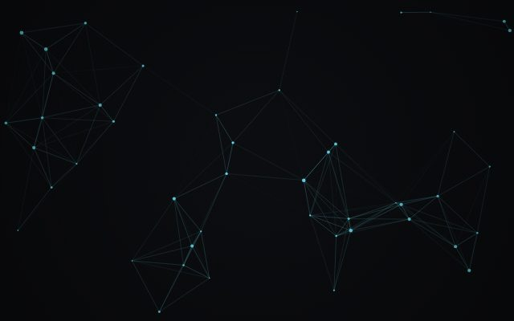
earth_stream
WebGL
地球ストリーム映像。
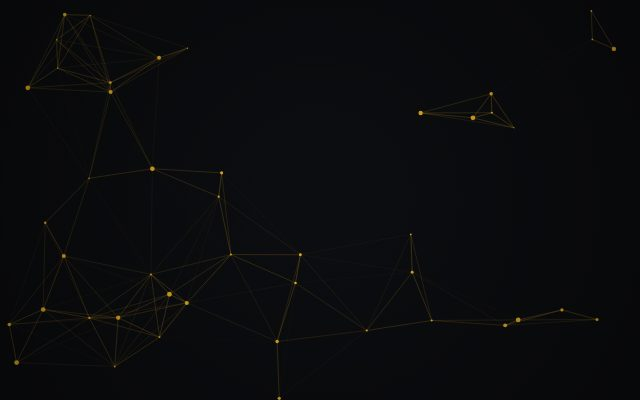
human_entropy_stream
p5.js
ヒューマンエントロピーストリーム。
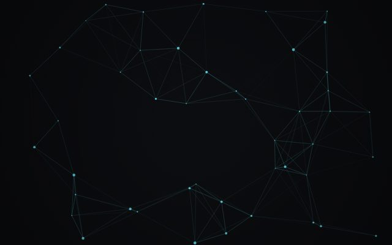
human_entropy_stream3D
WebGL
3D版ヒューマンエントロピーストリーム。
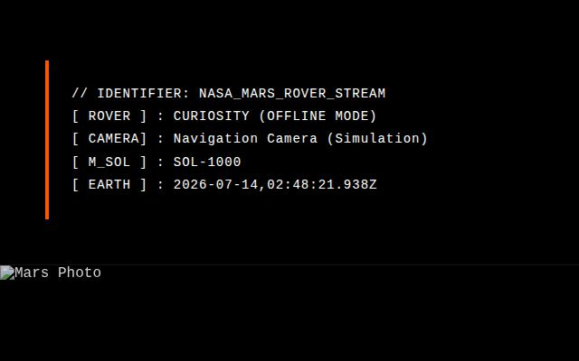
mars_stream
WebGL
火星ストリーム映像。
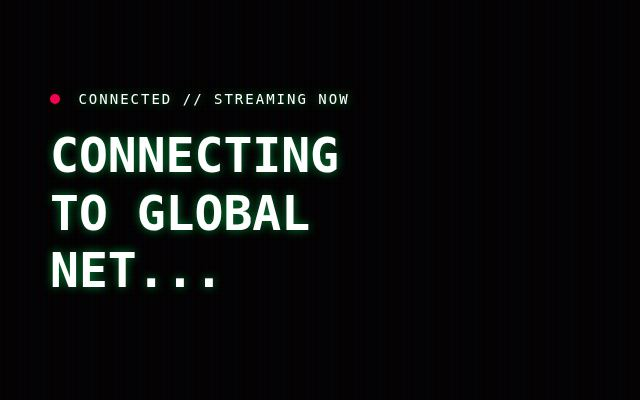
earth_stream_media
Media
ストリームメディアノード。
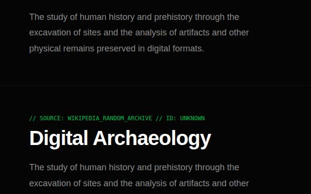
wiki_stream
API
Wikipediaストリーム。
3D・パーティクル
映像制作
写真・ビュー
週別課題